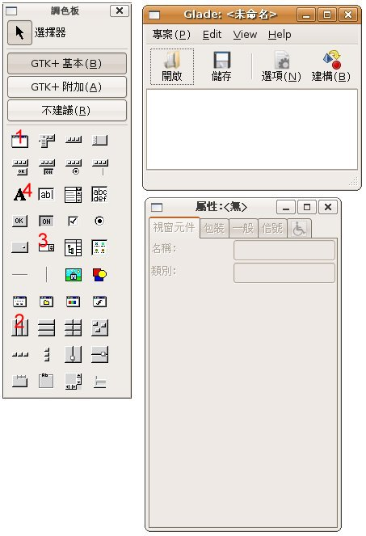
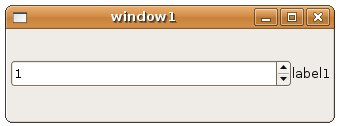
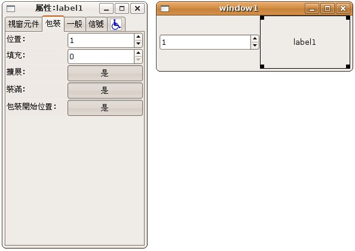
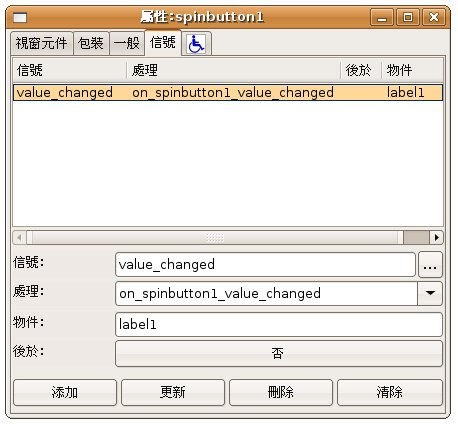
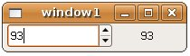

| Glade
是針對GTK+的圖形使用者介面產生器 (User Interface Builder for
GTK+)，簡而言之，是一個您可以所視即所得設計視窗畫面，並為您產生相對應程式碼的工具，在這邊將示範一下如何於Ubuntu下安裝Glade，並以
GtkHBox
與 GtkVBox 中的成果作為範例，介紹如何使用Glade產生相對應的畫面及編寫程式。 在Ubuntu下要安裝Glade，可以如以下的指令，其中後兩個指令是為了執行自動產生程式碼的Shell指令autogen.sh所必需：
接著您在Ubuntu的「應用程式/軟體開發」選單中，就可以看到Glade啟動圖示，開啟之後會有以下幾個視窗：  在「調色板」中按下「1」指示的按鈕，可以新增一個視窗，按下「2」指示的按鈕，並在新增的視窗上按一下，可以建立一個 GtkHBox，程式會詢問您要建立幾欄，請輸入2欄，接著按一下「3」指示的按鈕，並在視窗中GtkHBox左邊欄按一下可加入GtkSpinButton，按一下「4」指示的按鈕，並在視窗中GtkHBox右邊欄按一下可加入GtkLabel，適當調整一下大小，成果如下所示：  選擇上圖的「label1」，接著在「屬性」視窗上選擇「包裝」頁籤，並「擴展」與「裝滿」如下，可得相對應的成果如下圖右：  選擇上圖右的GtkSpinButton，並在「屬性」視窗的「信號」頁籤中添加信號處理如下圖：  接著在「Glade」主視窗中進行專案儲存，並選擇儲存位置，然後執行「專案/建構」，接下來就是編寫程式的動作了，開啟文字模式，進入方才儲存專案的位置下src目錄，可以看到幾個檔案：
若要進行callback函式的撰寫，可以編輯callback.h或 callback.c，在這邊請修改一下callback.h中on_spinbutton1_value_changed()函式的參數順序（這似乎是 Glade的一個Bug，因為interface.c中產生的程式碼，在信號連結時使用的是g_signal_connect_swapped()，但自動產生的callback函式定義參數順序剛好相 反）： void
on_spinbutton1_value_changed (gpointer user_data, GtkSpinButton *spinbutton); 接著編輯callbacks.c，同樣的先調換一下on_spinbutton1_value_changed()函式上參數的順序，並撰寫內容如下： void
on_spinbutton1_value_changed (gpointer user_data, GtkSpinButton *spinbutton) { gint value = gtk_spin_button_get_value_as_int(spinbutton); GString *text = g_string_new(""); g_string_sprintf(text, "%d", value); gtk_label_set_text(GTK_LABEL(user_data), text->str); } 接著cd到src上一層目錄，下達以下的指令：
若是編譯成功，則在src目錄下會產生一個可執行檔，執行之後成果如下：  您可以再參考一下 GTK+ and Glade3 GUI Programming Tutorial。 |